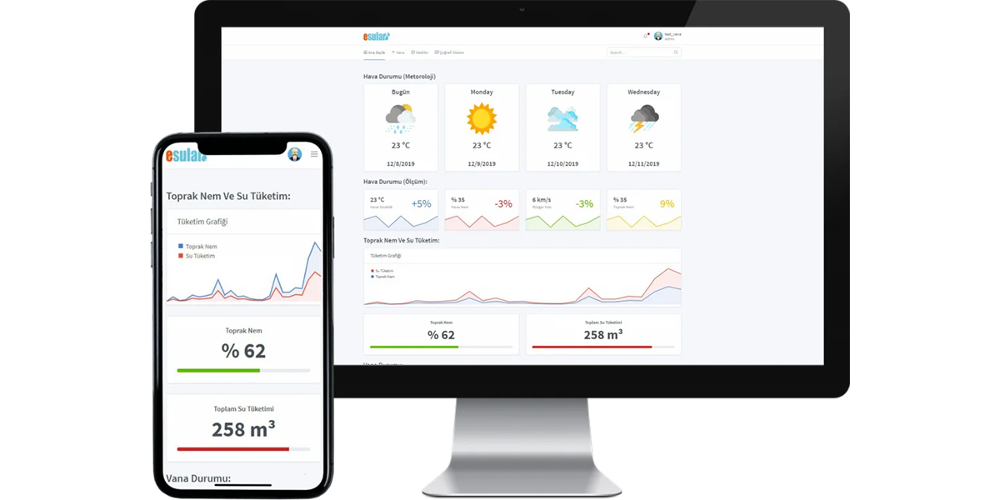
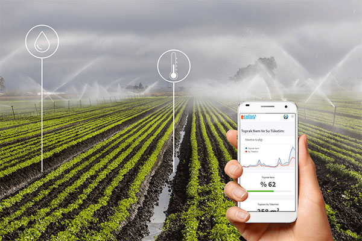

Esular


Akıllı Sulama Sistemi
Esular, tarım ve su yönetimi sektörlerini dijitalleştirerek, veri tabanlı kararlarla su ve gübre kaynaklarının daha verimli kullanılmasını ve sürdürülebilir tarımı teşvik etmeyi amaçlayan bir yapay zeka destekli su ve enerji yönetim platformudur.